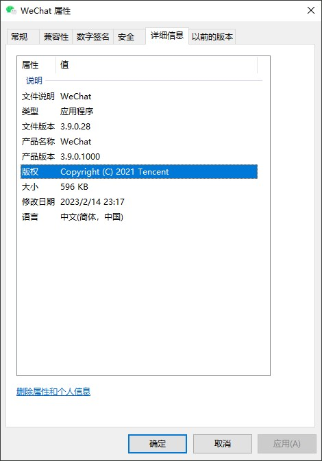

什么是版本元数据§
版本元数据就是用来描述二进制文件的信息，版本等数据的，例如下面在 Windows 上的属性截图，在不同的操作系统上都可以提供对可执行文件的元数据支持。

在 Nuitka 中，允许你进行二进制版本信息控制。
二进制版本信息§
-
--company-name=COMPANY_NAME在版本信息中使用的公司名称。默认未使用。 -
--product-name=PRODUCT_NAME在版本信息中使用的产品名称。默认为二进制文件的基本文件名。 -
--file-version=FILE_VERSION在版本信息中使用的文件版本。必须是最多4个数字的序列，例如1.0或1.0.0.0，不允许更多的数字，也不允许字符串。默认未使用。 -
--product-version=PRODUCT_VERSION在版本信息中使用的产品版本。与文件版本的规则相同。默认未使用。 -
--file-description=FILE_DESCRIPTION在版本信息中使用的文件描述（目前仅在 Windows 上可用）。默认情况下为二进制文件名。 -
--copyright=COPYRIGHT_TEXT在版本信息中使用的版权信息（目前仅适用于 Windows）。默认未使用。 -
--trademarks=TRADEMARK_TEXT在版本信息中使用的商标信息（目前仅适用于 Windows）。默认未使用。
Reference§
Nuitka the Python Compiler — Nuitka the Python Compiler documentation